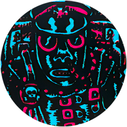

SPREAD THE BLIGHT
Bearing Lord Scrott's blessing, you must descend from the mountains & bring his guts to the lands of men. Soon their rotting Empire will crumble & a new world will spring forth from the ruins. All will be one & the subjects of the lord weird bird king will rejoice under shifting irridescent skies!
SETUP
The adventurer with the lowest CON must take the Fungal Parasite card; that adventurer becomes the 'fungal host'. If an adventurer already has the Fungal Parasite, they are the fungal host & may take the Blightspreader Triumph.
The following spaces are population centers that the fungal host must visit to share their 'gift'.
| Ġ Bandit Camp | Ġ Brüttelburg |
| Ġ The Holy Order | Ġ Pigskin Port |
| Ġ The Windmill (if there are 2 or more adventurers) |
| Ġ Fishmonger Camp (if there are 3 or more adventurers) |
| ĝ Plaguefinder General (Epic Monster) When word of the spreading blight reaches the ears of the inquisition, they send their finest plaguefinders to hunt down & exterminate the carrier of this insidious epidemic. |  |
OBJECTIVE
You complete this mission when there is a Fungus ī counter in each space with a Clue Ġ counter.
As a Rest Action, the fungal host can place a Fungus ī counter in their space. When the fungal host places a Fungus ī counter, if the Plaguefinder General is not already on the board, you must roll D6 & subtract 2 from your roll if you are in Bold č stance. If your roll is equal to or less than the total number of Fungus ī counters on the board, you must place the Plaguefinder General counter at the Holy Order (even if he was previously destroyed during this mission, as plaguefinders are promoted to fill the vacant post), then increase the Bounty Level.
THE PLAGUEFINDER GENERAL
The Plaguefinder General will follow the fungal host. When the Plaguefinder General moves into a Fungus ī space, remove the Fungus ī counter from that space. If the Plaguefinder General is destroyed, increase the Bounty Level & if you pass your Loot roll, draw a card from the Loot deck instead of the Epic Loot deck.
MISSION PATH
The doom of the Würstreich is assured! The West is drowned in an ocean of blight; corrupting the minds of the populace & plunging the Empire into violence, chaos & death. Hordes of weirds & mobs of civilians twisted into violent hallucinating lunatics swarm the streets of Brüttelburg, leaving it in ruins! The promised new world awaits as your body swells & erupts in a brilliant cascade of sporemist. As the years pass, great fungus pillars sprout from your rotting body... you are victorious!?